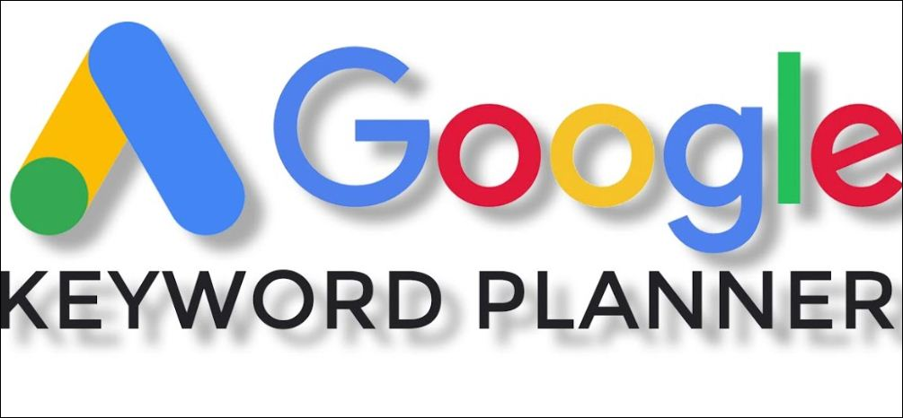
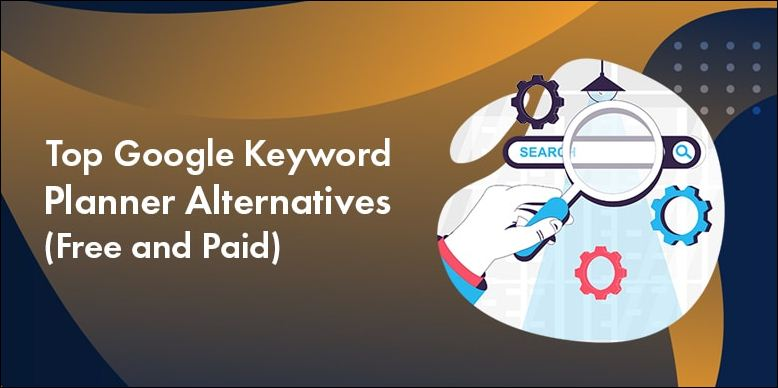

Google Keyword Planner: The Ultimate Tool for SEO Success

Table of Content
- What is Keyword Planning?
- Why is Keyword Planning important ?
- How to conduct comprehensive keyword research for SEO
- What is Google Keyword Planner?
- How to use Google Keyword Planner?
- Key Features of Google Keyword Planner
- Top 5 Alternatives to Google Keyword Planner
- Conclusion : Google Keyword Planner, Keyword Research
What is Keyword Planning?
Keyword planning is the process of researching and selecting specific words and phrases that are relevant to your business or website, and that you want to rank for in search engine results. These keywords are often used in the content of your website and in online advertising campaigns, as they help to attract potential customers who are searching for products or services related to those keywords.
To do keyword planning, you can use tools such as Google's Keyword Planner to help you research and identify the most popular and relevant keywords for your business. You can also use other tools such as Ahrefs, SEMrush, and Moz to help you find long-tail keywords and identify the search volume and competition for each keyword.
Once you have identified a list of potential keywords, you can use them to optimize your website's content and structure, as well as to create targeted advertising campaigns. By focusing on the right keywords, you can increase the chances of your website or ad appearing in search results when someone searches for those keywords, which can help to increase your website's traffic and sales.
Why is Keyword Planning important ?
Keyword planning is important for several reasons:
- It helps to attract the right kind of traffic to your website. By targeting the right keywords, you can attract visitors who are interested in the products or services that you offer, which can increase the chances of converting those visitors into customers.
- It helps to improve your search engine rankings. Search engines use keywords to determine the relevance of a website to a particular search query. By including relevant keywords in your website's content and meta tags, you can improve your chances of ranking higher in search results, which can lead to more traffic and sales.
- It helps to inform your content strategy. By identifying the keywords that are most relevant to your business, you can create content that addresses those keywords and the needs of your target audience. This can help to make your website more useful and valuable to your visitors.
- It helps to track your progress and identify opportunities for improvement. By monitoring the performance of your chosen keywords, you can identify which ones are driving the most traffic and conversions, and which ones may be underperforming. This can help you to adjust your strategy and optimize your website to better meet the needs of your audience.
How to conduct comprehensive keyword research for SEO

Conducting comprehensive keyword research for SEO is an essential part of any digital marketing strategy, as it helps to identify the words and phrases that people are using to search for products or services related to your business. By targeting the right keywords, you can increase the chances of your website appearing in search results and attracting the right kind of traffic. Here is a more detailed explanation of the steps involved in conducting comprehensive keyword research for SEO:
Identify your target audience : The first step in conducting keyword research is to think about who you are trying to reach with your website. Consider the demographics, interests, and needs of your target audience, as well as what they might be searching for online. This will help you to identify the keywords that are most relevant to your business and your target audience.
Determine your business goals : Next, consider what you want to achieve with your website. Do you want to increase traffic, sales, or conversions? Are you trying to build brand awareness or establish yourself as an authority in your industry? By identifying your business goals, you can better understand which keywords will be most valuable to your business.
Use keyword research tools : There are many tools available that can help you find popular and relevant keywords, including Google's Keyword Planner and other tools such as Ahrefs, SEMrush, and Moz. These tools allow you to enter a seed keyword and get a list of related keywords, as well as information about their search volume and competitiveness.
Create a list of potential keywords : Based on your target audience and business goals, create a list of potential keywords that you want to target. This list should include a mix of broad, general keywords and more specific, long-tail keywords.
Evaluate the competitiveness and search volume of each keyword : Using keyword research tools, evaluate the competitiveness and search volume of each keyword on your list. This will help you to identify the most valuable keywords to target, as well as any gaps in your keyword strategy.
What is Google Keyword Planner?
Google Keyword Planner is a tool offered by Google Ads that helps businesses and advertisers find and research keywords for their online marketing campaigns. It is designed to help businesses identify the most popular and relevant keywords for their products or services, as well as to estimate the search volume and cost-per-click (CPC) of those keywords.
To use Google Keyword Planner, you will need to have a Google Ads account. Once you have signed up, you can access the tool by logging into your account and clicking on "Tools & Settings" in the top menu, then selecting "Keyword Planner" from the drop-down menu.
How to use Google Keyword Planner?
There are two main ways to use Google Keyword Planner:
- Find new keywords : If you are just starting to plan your online marketing campaign, you can use the "Discover new keywords" feature to find keywords that are related to your business or website. Simply enter a seed keyword or phrase, and the tool will generate a list of related keywords, as well as information about their search volume and competition.
- Get historical metrics and forecasted performance : If you have an existing campaign and want to see how your keywords are performing, you can use the "Get search volume and forecasts" feature to get historical data and forecasted performance for your keywords. Simply enter your keywords and the tool will show you the search volume and estimated CPC for each keyword, as well as the total cost and number of clicks you can expect to receive based on your budget.
Key Features of Google Keyword Planner
Google Keyword Planner has several key features that can help businesses and advertisers find and research keywords for their online marketing campaigns:
- Discover new keywords: This feature allows you to enter a seed keyword or phrase and get a list of related keywords, as well as information about their search volume and competition.
- Get search volume and forecasts: This feature allows you to see the historical search volume and estimated cost-per-click (CPC) for your targeted keywords, as well as forecasted performance based on your budget.
- Targeting options: You can use the targeting options to specify the location, language, and device type for your keywords, which can help you to get more accurate search volume and CPC estimates.
- Keyword groups: You can organize your keywords into groups, which can make it easier to analyze and compare the performance of different keywords.
- Negative keywords: You can use negative keywords to exclude certain words or phrases from your targeting, which can help you to improve the relevance of your ads.
- Ad group ideas: This feature generates a list of ad groups and suggested keywords based on your seed keywords, which can help you to get ideas for your campaigns.
Top 5 Alternatives to Google Keyword Planner

There are several alternatives to the Google Keyword Planner that you can use to research and identify potential keywords for your website or marketing campaigns. Here are a few top options:
Learn More : Top 10 Google Keyword Planner Primelis in the USA
- Ahrefs : Ahrefs is a comprehensive SEO tool that includes a keyword research tool that allows you to see the search volume, difficulty, and organic traffic potential of specific keywords. It also includes features like a content gap tool, which can help you identify keywords that your competitors are ranking for but you are not.
- SEMrush : SEMrush is another popular SEO tool that includes a keyword research tool with features like search volume data, keyword difficulty scores, and related keyword suggestions. It also includes tools for analyzing your competitors' keyword strategies and for tracking your own keyword rankings.
- Keywordtool.io : Keywordtool.io is a free keyword research tool that generates a list of related keywords based on a given seed keyword. It also provides search volume data and cost-per-click estimates for paid search campaigns.
- Moz Keyword Explorer : Moz Keyword Explorer is a keyword research tool that provides search volume data, keyword difficulty scores, and related keyword suggestions. It also includes features for analyzing the keyword strategies of your competitors and for tracking your own keyword rankings.
- Ubersuggest : Ubersuggest is a free keyword research tool that generates a list of related keywords based on a given seed keyword. It also provides search volume data and cost-per-click estimates for paid search campaigns, as well as suggestions for long-tail keywords.
Conclusion
Google Keyword Planner is a free tool provided by Google that allows users to research and identify potential keywords for their website or marketing campaigns. It can be especially useful for SEO (search engine optimization) efforts, as it provides data on search volume, competition level, and estimated cost-per-click for paid search ads.
Using the Google Keyword Planner, users can enter a seed keyword and generate a list of related keywords, as well as see data on the search volume and competition level for each keyword. This can help users identify keywords that are likely to drive targeted traffic to their site and optimize their content and campaigns for those keywords. The tool also allows users to see how their chosen keywords perform in different regions and languages, giving them the ability to target their campaigns to specific locations or demographics. Overall, the Google Keyword Planner is a valuable resource for anyone looking to conduct keyword research and optimize their website or marketing efforts for search engines.